Educamos para el Trabajo con Pasión
Somos una organización de la sociedad civil sin fines de lucro cuyo objetivo primordial es brindar herramientas a personas en situación de vulnerabilidad para construir un proyecto de vida sostenible.
El valor de la autosuperación
En Fundación Pescar Argentina creemos profundamente en el valor de cada individuo y en la posibilidad de superación constante. Promovemos e implementamos diversos programas de formación integral, acompañando la trayectoria educativa y laboral de nuestros beneficiarios.
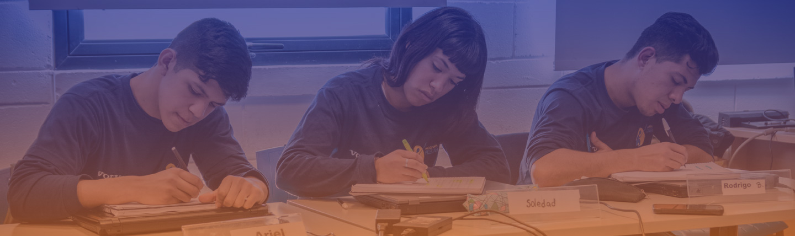
Los 3 Pilares de Formación
La conjunción que genera oportunidades reales de inclusión socio-laboral.
1. Habilidades Socioemocionales
Comunicación oral y escrita, autoconfianza, gestión de emociones, trabajo en equipo, resolución de problemas y cultura del trabajo.
2. Formación Técnico-Profesional
Conocimientos técnicos alineados con las empresas socias: programación, neuroventas, atención al cliente, administración, estética y mecatrónica.
3. Competencias Tecnológicas
Reducción de la brecha digital: dominio de herramientas de oficina, plataformas colaborativas cloud y plataformas de empleo.
Nuestra Trayectoria
Desde los orígenes en la fábrica hasta la red nacional actual.
La primera semilla
Geraldo Linck abre las puertas de su empresa para enseñarles un oficio a jóvenes vulnerables.
Se funda Projeto Pescar
Se constituye formalmente en Brasil como red educativa con el sector privado (47+ años de trayectoria).
Nace Fundación Pescar Argentina
Rose Linck, Edgardo Palmero, Silvia Uranga, Eduardo Novillo Astrada y la Universidad del Salvador fundan Pescar Argentina.
Innovación y Salto Federal
Adaptación integral a la virtualidad sincrónica con envío de kits y expansión operativa a todo el país.
+107k Beneficiarios
Alianzas estratégicas con empresas globales, certificación universitaria USAL y bolsa de empleo activa.
El Equipo de Fundación Pescar
Profesionales comprometidos con la educación y el trabajo.
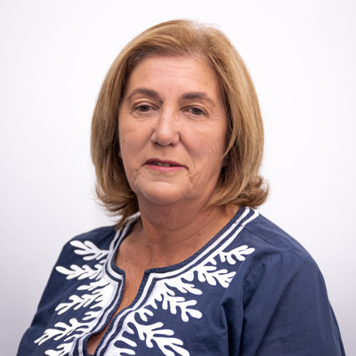
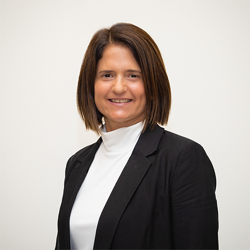
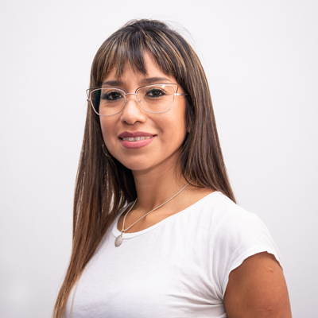
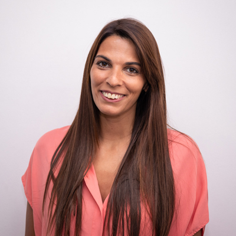
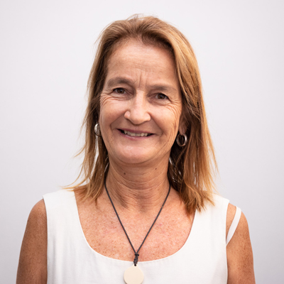
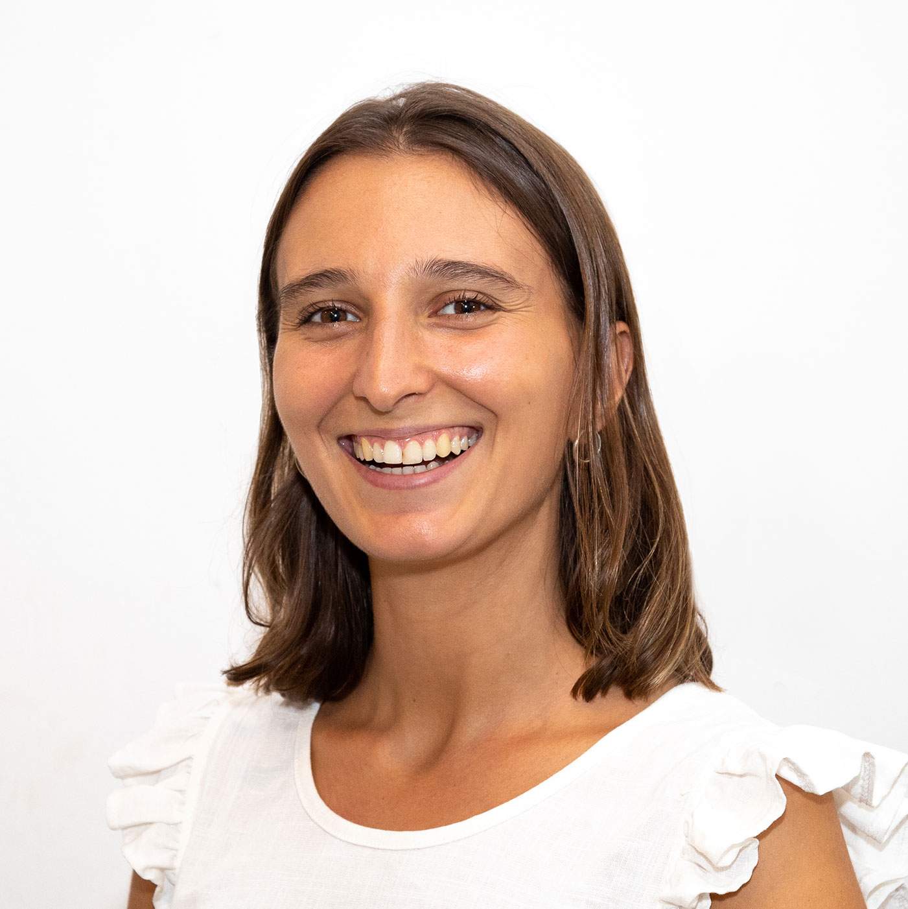
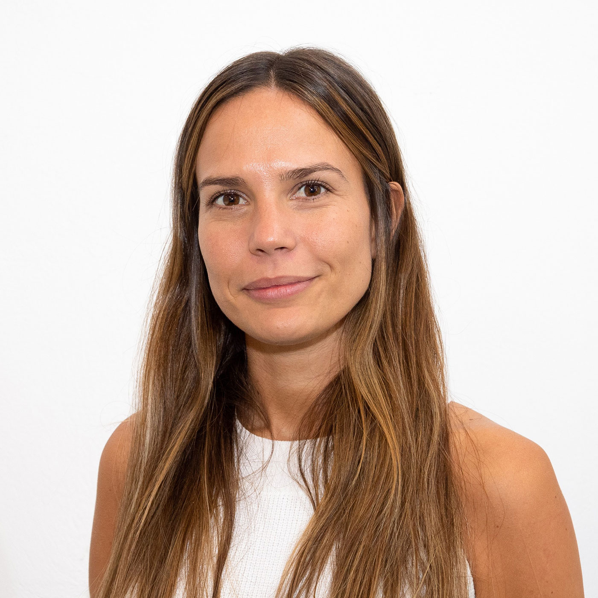
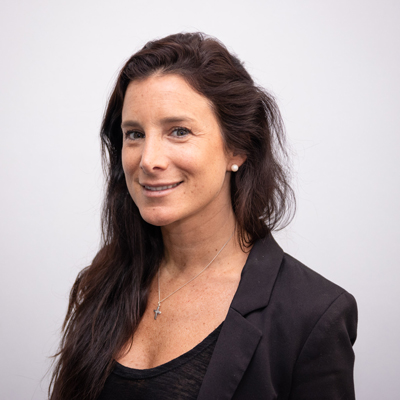
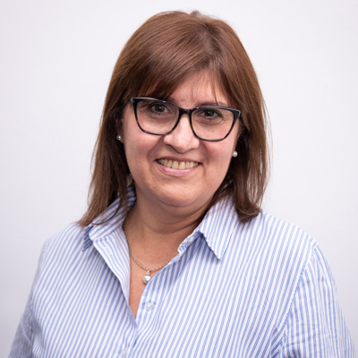
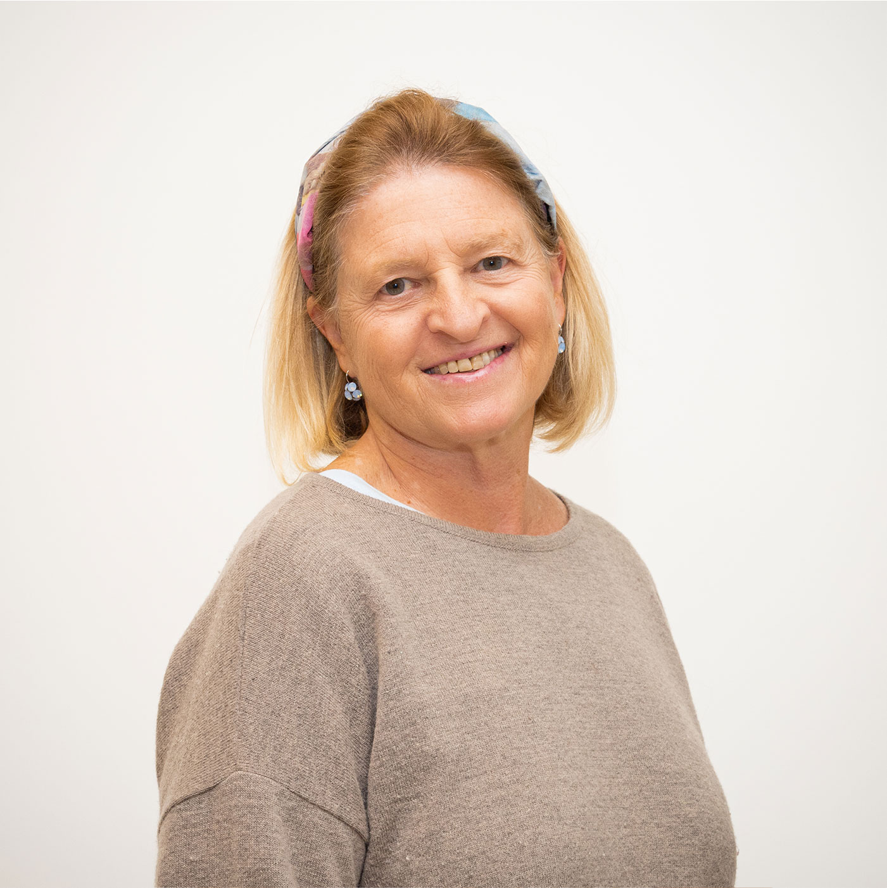
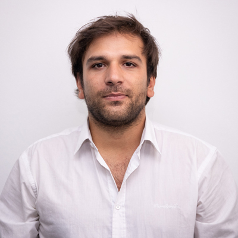
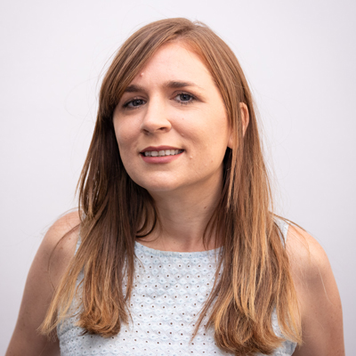
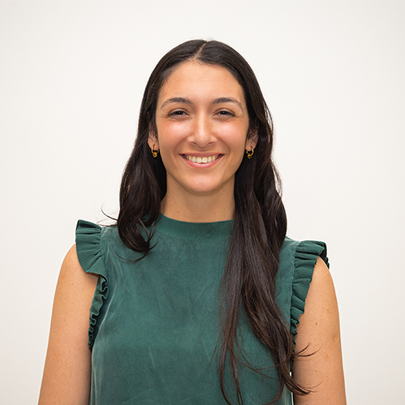
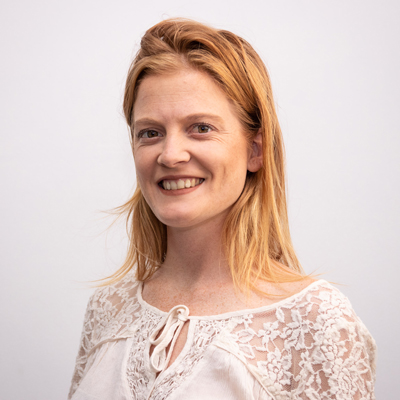
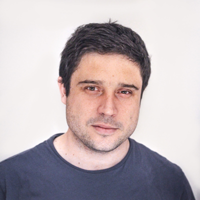
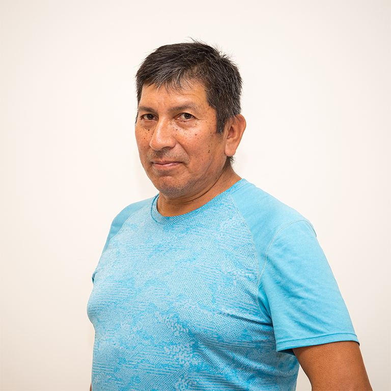
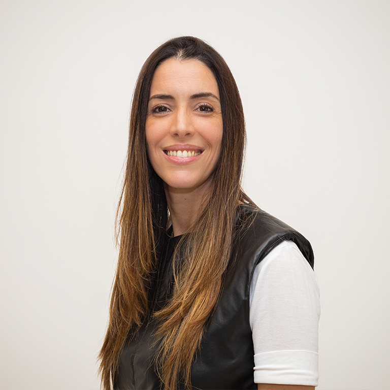